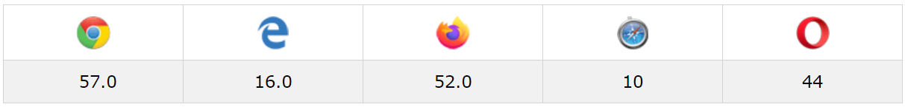

Grid Layout
Introduction
Grid is a 2D-based layout with the aim of organising elements in a table-like fashion. CSS has always been used to lay out our web pages, but it’s never done a very good job of it. First, tables, floats, positioning and inline-block were used, but they essentially left out a lot of important functionality; in response to this, Grid is the very first CSS module created specifically to solve the common layout problems encountered by web developers over the years.
Browser Support
The browsers that support the Grid module/layout
CSS Grid Properties
| # | Properties (Grid Item) | Description (Grid Item) |
|---|---|---|
| 1 | align-self | Aligns a grid item inside a cell along the block (column) axis (as opposed to justify-self which aligns along the inline (row) axis). This value applies to the content inside a single grid item. |
| 2 | place-self | Sets both the align-self and justify-self properties in a single declaration. |
| 3 | justify-self | Aligns a grid item inside a cell along the inline (row) axis (as opposed to align-self which aligns along the block (column) axis). This value applies to a grid item inside a single cell. |
| 4 | grid-column-start, grid-column-end, grid-row-start, grid-row-end | Determines a grid item’s location within the grid by referring to specific grid lines. grid-column-start/grid-row-start is the line where the item begins, and grid-column-end/grid-row-end is the line where the item ends. |
| 5 | grid-column, grid-row | Shorthand for grid-column-start + grid-column-end, and grid-row-start + grid-row-end, respectively. |
| 6 | grid-area | Gives an item a name so that it can be referenced by a template created with the grid-template-areas property. Alternatively, this property can be used as an even shorter shorthand for grid-row-start + grid-column-start + grid-row-end + grid-column-end. |
| # | Properties (Grid Container) | Description (Grid Container) |
|---|---|---|
| 1 | display | Defines the element as a grid container and establishes a new grid formatting context for its contents. |
| 2 | grid-template-columns, grid-template-rows | Defines the columns and rows of the grid with a space-separated list of values. The values represent the track size, and the space between them represents the grid line. |
| 3 | grid-template-areas | Defines a grid template by referencing the names of the grid areas which are specified with the grid-area property. Repeating the name of a grid area causes the content to span those cells. A period signifies an empty cell. The syntax itself provides a visualization of the structure of the grid. |
| 4 | grid-template | A shorthand for setting grid-template-rows, grid-template-columns, and grid-template-areas in a single declaration. |
| 5 | column-gap, row-gap, grid-column-gap, grid-column-row | Specifies the size of the grid lines. You can think of it like setting the width of the gutters between the columns/rows. |
| 6 | justify-items | Aligns grid items along the inline (row) axis (as opposed to align-items which aligns along the block (column) axis). This value applies to all grid items inside the container. |
| 7 | align-items | Aligns grid items along the block (column) axis (as opposed to justify-items which aligns along the inline (row) axis). This value applies to all grid items inside the container. |
| 8 | place-items | place-items sets both the align-items and justify-items properties in a single declaration. |
| 9 | justify-content | Sometimes the total size of your grid might be less than the size of its grid container. This could happen if all of your grid items are sized with non-flexible units like px. In this case you can set the alignment of the grid within the grid container. This property aligns the grid along the inline (row) axis (as opposed to align-content which aligns the grid along the block (column) axis). |
| 10 | align-content | Sometimes the total size of your grid might be less than the size of its grid container. This could happen if all of your grid items are sized with non-flexible units like px. In this case you can set the alignment of the grid within the grid container. This property aligns the grid along the block (column) axis (as opposed to justify-content which aligns the grid along the inline (row) axis). |
| 11 | place-content | place-content sets both the align-content and justify-content properties in a single declaration. |
| 12 | grid-auto-columns, grid-auto-rows | Specifies the size of any auto-generated grid tracks (aka implicit grid tracks). Implicit tracks get created when there are more grid items than cells in the grid or when a grid item is placed outside of the explicit grid. |
| 13 | grid-auto-flow | If you have grid items that you don’t explicitly place on the grid, the auto-placement algorithm kicks in to automatically place the items. This property controls how the auto-placement algorithm works. |
| 14 | grid | A shorthand for setting all of the following properties in a single declaration: grid-template-rows, grid-template-columns, grid-template-areas, grid-auto-rows, grid-auto-columns, and grid-auto-flow. |